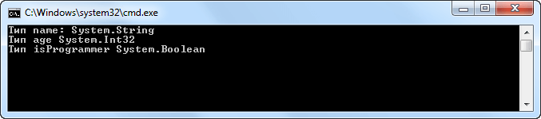
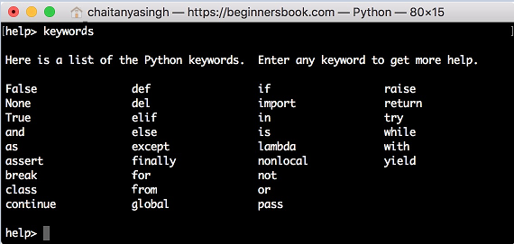

Переменные и константы.
Переменная -
область оперативной памяти, обладающая собственным именем и
предназначеная для хранения данных, которые могут быть изменены.
Константа - область
оперативной памяти, обладающая собственным именем и
предназначеная для хранения постоянных данных.
Из определений становятся понятно, что
для поиска данных в памяти им дают имена
(по аналогии с тем, что вещи в багажном вагоне снабжают
бирочками). В среде программирования их называют
идентификаторами.
Правила составления имен идентификаторов
Имена данным даются, соблюдая строго определенные правила.
Этих правил нарушать нельзя! В имени допустимо использование
только следующих символов:
ПРОПИСНЫЕ и строчные буквы латинского
алфавита. При этом не забывайте о регистрозависимости языка.
Например, Age и age - это два разных имени.
Цифры. Однако, цифра не может быть использована в качестве первого символа.
То есть, Name1 допустимо,
1Name - нет.
Пробел в именах идентификаторов использовать нельзя, его можно заменять знаком подчеркивания.
Например, Age_Of_Man.
Нельзя использовать зарезервированный слова.
Например int, float,double и т. п..
Нежелательно существование двух идентификаторов с одинаковыми
именами.
Объявление и использование переменных и констант
Общий синтаксис:
тип_данных имя_переменной;
- в данном случае в оперативной памяти будет выделена
ячейка размером, соответствующим заданному типу. И этой ячейке
будет присвоенное выбранное Вами имя.
Что же там будет содержаться? В только что созданную переменную будет записано случайное число, определяемое операционной системой. Это число будет содержаться в памяти до тех пор, Вы не заполните переменную другим значением, с помощью специального оператора присваивания =
тип_данных имя_переменной = значение; - существует и такая возможность - заполнить переменную значением, прямо при создании. Такой процесс мы будем называть инициализацией.
const тип_данных имя_переменной=значение; - а это объявление константы. Основные моменты состоят в том, что вне зависимости от типа данных перед ним указывается ключевое слово const. Кроме того константа обязательно должна быть проинициализирована при создании. Поменять ее значение впоследствии будет невозможно.
Переменные в Pascal,
Переменные.
Переменные в отличие от констант могут неограниченное число раз менять свое значение в процессе работы программы. Если в начале программы некоторая переменная X имела значение 0, то в конце программы X может принять значение 10000. Так бывает, например, при суммировании введенных с клавиатуры чисел.
Переменные описываются с помощью зарезервированного слова var. За ним перечисляются идентификаторы переменных, и через двоеточие указывается их тип. Каждая группа переменных отделяется от другой группы точкой с запятой. Например:
var Index: Integer; // переменная целого типа данных FileName: string; // переменная строкового типа данных Sum, Profit: Double; // группа переменных вещественного типа данных |
В теле программы переменной можно присвоить значение. Для этого используется составной символ :=, например:
Sum := 5000.0; // переменной Sum присваивается 5000
Percent := 0.15; // переменной Percent присваивается 0.15
Profit := Sum * Percent; // вычисляется произведение двух переменных
// и его результат присваивается переменной
// Profit
|
Вы можете присвоить значение переменной непосредственно при объявлении:
var Index: Integer = 1; Delimiter: Char = ';'; |
Объявленные таким образом переменные называются инициализированными. На инициализированные переменные накладывается ограничение: они не могут объявляться в подпрограммах (процедурах и функциях). Если переменная не инициализируется при объявлении, то по умолчанию она заполняется нулем.
Каждый используемый в программе элемент данных должен быть описан в разделе const или var. Исключение составляют данные, заданные непосредственно значением, например:
Write(100, 200); // 100 и 200 - данные, заданные значением |
Переменные в C#.
Синтаксис объявления переменных в C#
выглядит следующим образом:
ТипДанных Идентификатор
Например:
int i;
Объявить можно переменную любого
действительного типа. Важно подчеркнуть, что возможности
переменной определяются ее типом. Например, переменную типа bool
нельзя использовать для хранения числовых значений с плавающей
точкой. Кроме того, тип переменной нельзя изменять в течение
срока ее существования. В частности, переменную типа int нельзя
преобразовать в переменную типа char.
Все переменные в C# должны быть объявлены до их применения. Это
нужно для того, чтобы уведомить компилятор о типе данных,
хранящихся в переменной, прежде чем он попытается правильно
скомпилировать любой оператор, в котором используется
переменная. Это позволяет также осуществлять строгий контроль
типов в C#.
Инициализация переменной
Задать значение переменной можно, в
частности, с помощью оператора присваивания. Кроме того, задать
начальное значение переменной можно при ее объявлении. Для этого
после имени переменной указывается знак равенства (=) и
присваиваемое значение. Если две или более переменные одного и
того же типа объявляются списком, разделяемым запятыми, то этим
переменным можно задать, например, начальное значение. Ниже
приведена общая форма инициализации переменной:
int i = 10; // задаем целочисленной
переменной i значение 10
char symbol = 'Z'; // инициализируем переменную symbol буквенным
значением Z
float f = 15.7F; // переменная f инициализируется числовым
значением 15.
int x = 5, y = 10, z = 12; //
инициализируем несколько переменных одного типа
Инициализация переменных демонстрирует
пример обеспечения безопасности C#. Коротко говоря, компилятор
C# требует, чтобы любая переменная была инициализирована
некоторым начальным значением, прежде чем можно было обратиться
к ней в какой-то операции. В большинстве современных
компиляторов нарушение этого правила определяется и выдается
соответствующее предупреждение, но "всевидящий" компилятор C#
трактует такие нарушения как ошибки. Это предохраняет от
нечаянного получения значений "мусора" из памяти, оставшегося
там от других программ.
В C# используются два метода для обеспечения инициализации
переменных перед пользованием:
Переменные, являющиеся полями класса или структуры, если не
инициализированы явно, по умолчанию обнуляются в момент
создания.
Переменные, локальные по отношению к методу, должны быть явно
инициализированы в коде до появления любого оператора, в котором
используются их значения. В данном случае при объявлении
переменной ее инициализация не происходит автоматически, но
компилятор проверит все возможные пути потока управления в
методе и сообщит об ошибке, если обнаружит любую возможность
использования значения этой локальной переменной до ее
инициализации.
Например, в C# поступить следующим образом нельзя:
public static int
Main()
{
int d;
Console.WriteLine(d); // Так нельзя!
// Необходимо инициализировать d перед использованием.
return 0;
Динамическая инициализация
В приведенных выше примерах в качестве
инициализаторов переменных использовались только константы, но в
C# допускается также динамическая инициализация переменных с
помощью любого выражения, действительного на момент объявления
переменной:
int i1 = 3, i2 = 4;
// Инициализируем динамически
переменную result
double result = Math.Sqrt(i1*i1 + i2*i2);
В данном примере объявляются три локальные
переменные i1, i2, result, первые две из которых
инициализируются константами, а переменная result
инициализируется динамически с использованием метода Math.Sqrt(),
возвращающего квадратный корень выражения. Следует особо
подчеркнуть, что в выражении для инициализации можно
использовать любой элемент, действительный на момент самой
инициализации переменной, в том числе вызовы методов, другие
переменные или литералы.
Неявно типизированные переменные
Как пояснялось выше, все переменные в C#
должны быть объявлены. Как правило, при объявлении переменной
сначала указывается тип, например int или bool, а затем имя
переменной. Но начиная с версии C# 3.0, компилятору
предоставляется возможность самому определить тип локальной
переменной, исходя из значения, которым она инициализируется.
Такая переменная называется неявно типизированной.
Неявно типизированная переменная объявляется с помощью ключевого
слова var и должна быть непременно инициализирована. Для
определения типа этой переменной компилятору служит тип ее
инициализатора, т.е. значения, которым она инициализируется:
var i = 12; // переменная i
инициализируется целочисленным литералом
var d = 12.3; // переменная d инициализируется
литералом с плавающей точкой,
// имеющему тип double
var f = 0.34F; // переменная f теперь имеет тип
float
Единственное отличие неявно типизированной
переменной от обычной, явно типизированной переменной, — в
способе определения ее типа. Как только этот тип будет
определен, он закрепляется за переменной до конца ее
существования.
Неявно типизированные переменные внедрены в C# не для того,
чтобы заменить собой обычные объявления переменных. Напротив,
неявно типизированные переменные предназначены для особых
случаев, и самый примечательный из них имеет отношение к языку
интегрированных запросов (LINQ). Таким образом, большинство
объявлений переменных должно и впредь оставаться явно
типизированными, поскольку они облегчают чтение и понимание
исходного текста программы.
Давайте рассмотрим пример, где в консоль будем выводить типы
неявно типизированных переменных:
using System;
using System.Collections.Generic;
using System.Linq;
using System.Text;
namespace ConsoleApplication1
{
class Program
{
static void Main(string[] args)
{
var name = "Alex Erohin";
var age = 26;
var isProgrammer = true;
// Определяем тип переменных
Type nameType = name.GetType();
Type ageType = age.GetType();
Type isProgrammerType = isProgrammer.GetType();
// Выводим в консоль результаты
Console.WriteLine("Тип name: {0}",nameType);
Console.WriteLine("Тип age {0}",ageType);
Console.WriteLine("Тип isProgrammer {0}",isProgrammerType);
Console.ReadLine();
}
}
}
Результатом работы данной программы будет:

Переменные в Pyton.
Python — язык с динамической типизацией. То есть значения присваиваются переменным не при компиляции, а построчно во время выполнения программы.
Поэтому в Python объявлять переменную отдельно не нужно — достаточно сразу её инициализировать, то есть присвоить значение. Для этого используют знак равно =.
Более того, потом ей же можно присвоить значение другого типа:
x = 4
print(x)
>>> 4
x = 'слово'
print(x)
>>> слово
Переменные предназначены для хранения данных. Название переменной в Python должно начинаться с алфавитного символа или со знака подчеркивания и может содержать алфавитно-цифровые символы и знак подчеркивания. И кроме того, название переменной не должно совпадать с названием ключевых слов языка Python. Ключевых слов не так много, их легко запомнить:

Например, создадим переменную:
name="Tom"
Здесь определена переменная name,
которая хранит строку "Tom".
В пайтоне применяется два типа наименования переменных: camel case и underscore notation.
Camel case подразумевает, что каждое новое подслово в наименовании переменной начинается с большой буквы. Например:
userName="Tom"
Underscore notation подразумевает, что подслова в наименовании переменной разделяются знаком подчеркивания. Например:
user_name="Tom"
И также надо учитывать регистрозависимость, поэтому переменные name и Name будут
представлять разные объекты.
# две разные переменные
name = "Tom"
Name = "Tom"
Определив переменную, мы можем использовать в программе. Например, попытаться вывести ее содержимое на консоль с помощью встроенной функции print:
name = "Tom" # определение переменной
nameprint(name) # вывод значения переменной name на консоль
Например, определение и применение переменной в среде PyCharm:

Отличительной особенностью переменной является то, что мы можем менять ее значение в течение работы программы:
name = "Tom" # переменной name равна "Tom"
print(name) # выводит: Tom
name = "Bob" # меняем значение на "Bob"
print(name) # выводит: Bob